Collection reconstruction · architecture pass v21
Wide-shot layout corrections, Muse plaster/mouldings, the matched Arabesque Wallpaper, and separate sculpture front/rear textures. Wide shots corrected the gallery doorway, display-case arrangement and chair/table positions. This is a working study; the remaining filmed rooms and objects are unfinished.
Open the walkable demo · WASD move; Space reset; 1/2 room views.
Long gallery: full survey review
All 497 survey frames from IMG_6384/6385/6386 inspected. Ordered lower-bound inventory: 24 long-wall groups, one additional far-corner painting and nine display/furniture groups. Most are still unbuilt. Reciprocal wide shots confirm the secretary and Delacroix wall; the opposite wall has projecting piers. Metric spacing remains provisional.
Source-indexed inventory and unresolved identities
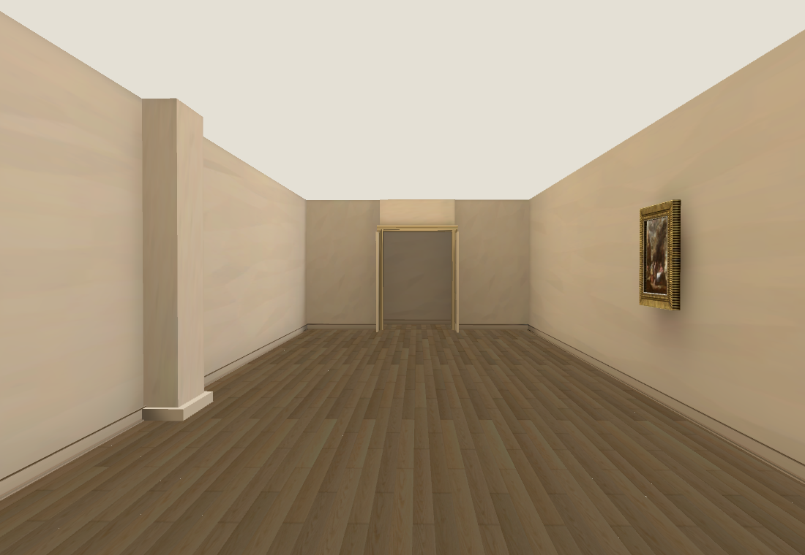
Gallery study: the source-observed piers and Fetti on the verified painting wall. Missing art/cases are visible gaps, not a finished gallery.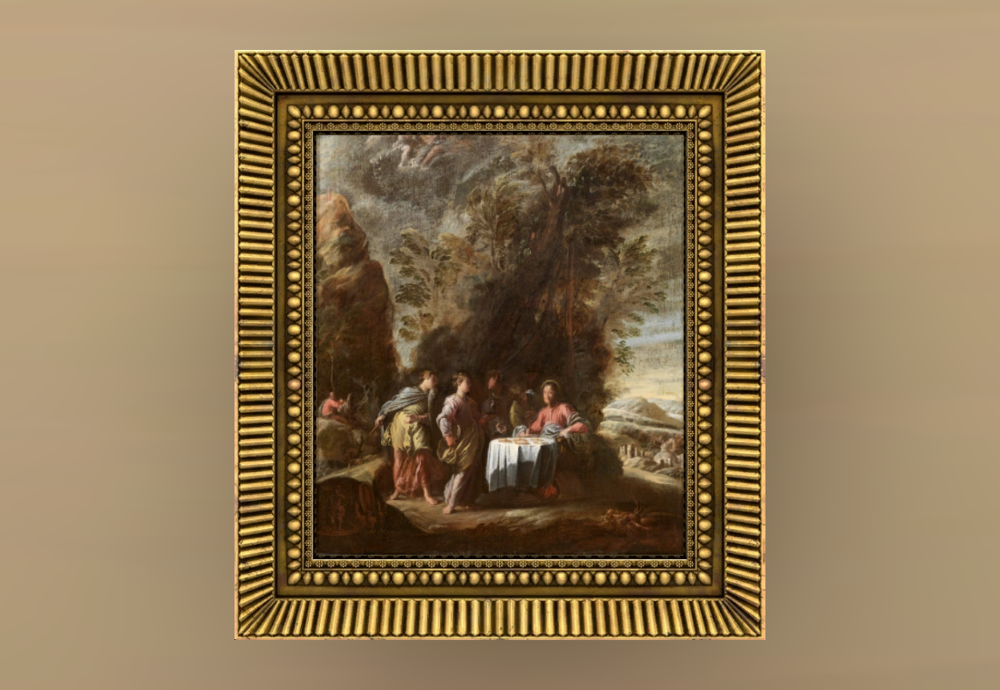
36.003 authentic canvas, cropped to exclude photographed gilt edge, installed in its existing Muse frame. Frame depth and exact position unmeasured.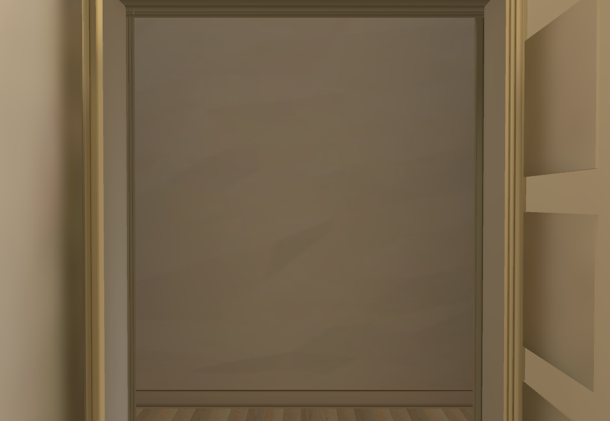
Far doorway and open panelled leaves. Walkable threshold extends only 1.6 metres beyond; the sculpture room is unfinished. The temporary end wall is a study limit.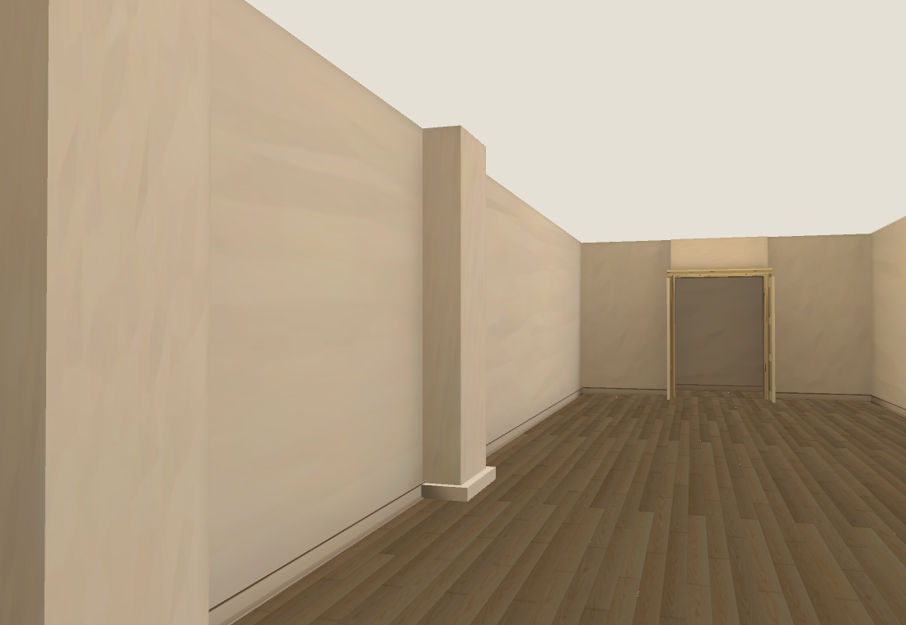
Source-observed projecting piers; exact depths/spacing remain provisional.Additional official matches; assets pending
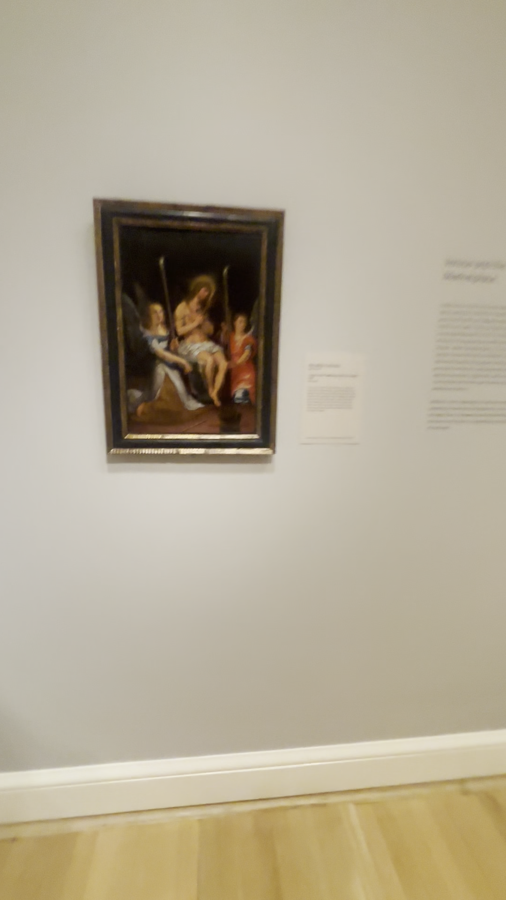
Native video reference. 61.006 · Christ on the Cold Stone with Two Angels · RISD API and official photograph matched. This asset is not yet in the room.
61.006 · Christ on the Cold Stone with Two Angels · RISD API and official photograph matched. This asset is not yet in the room.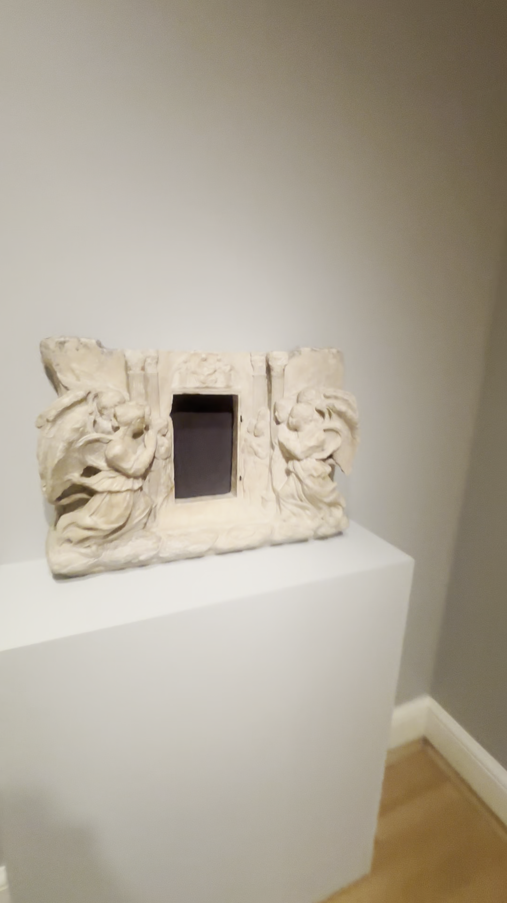
Native video reference. 06.057 · Tabernacle · RISD API and official photograph matched. This asset is not yet in the room.
06.057 · Tabernacle · RISD API and official photograph matched. This asset is not yet in the room.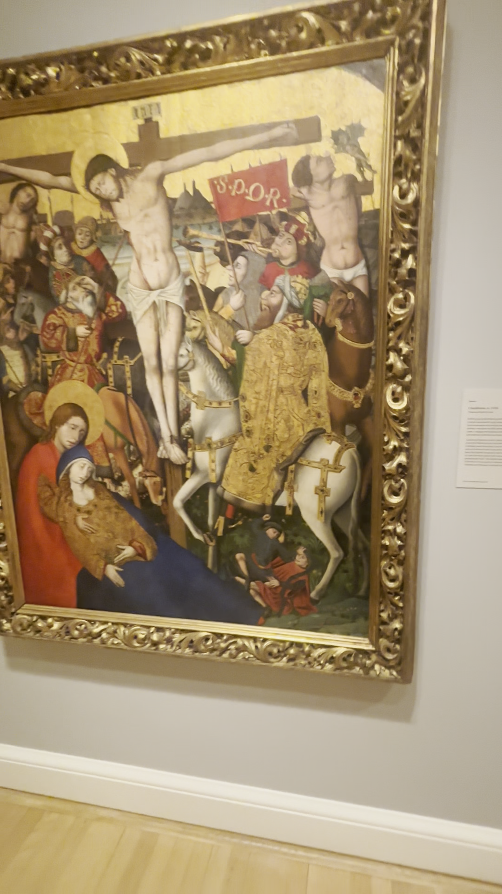
Native video reference. 69.197 · Crucifixion · RISD API and official photograph matched. This asset is not yet in the room.
69.197 · Crucifixion · RISD API and official photograph matched. This asset is not yet in the room.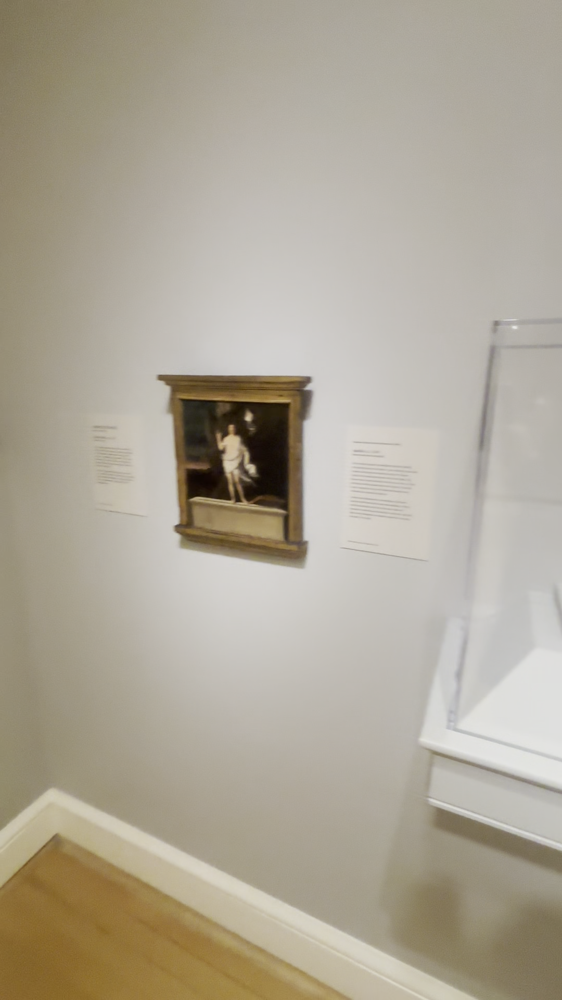
Native video reference. 16.237 · Risen Christ · RISD API and official photograph matched. This asset is not yet in the room.
16.237 · Risen Christ · RISD API and official photograph matched. This asset is not yet in the room.Official RISD record · 61.006
Official RISD record · 06.057
Official RISD record · 69.197
Official RISD record · 16.237
Muse frame trial: proportions rejected
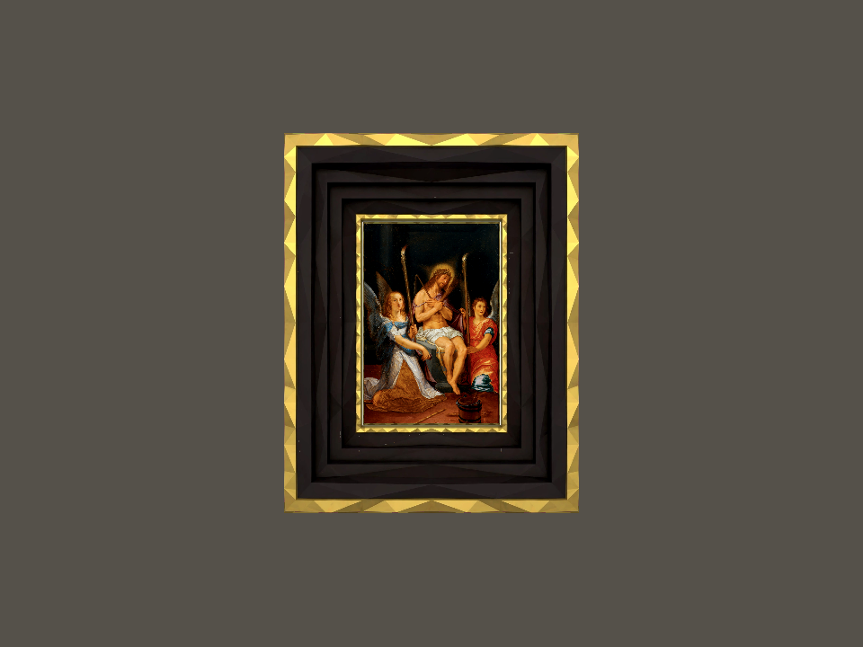
One additional OpenRouter Muse pass, $0.01: black/gold design retained, but bands too wide compared with source. Saved for deterministic band compression and verification; not installed, no paid retry.
All gallery contact sheets
Rotation corrected for portrait display; survey images remain untouched.
 IMG_6384-001-024
IMG_6384-001-024 IMG_6384-025-048
IMG_6384-025-048 IMG_6384-049-072
IMG_6384-049-072 IMG_6384-073-096
IMG_6384-073-096 IMG_6384-097-120
IMG_6384-097-120 IMG_6384-121-144
IMG_6384-121-144 IMG_6384-145-168
IMG_6384-145-168 IMG_6384-169-192
IMG_6384-169-192 IMG_6384-193-209
IMG_6384-193-209 IMG_6385-001-024
IMG_6385-001-024 IMG_6385-025-048
IMG_6385-025-048 IMG_6385-049-072
IMG_6385-049-072 IMG_6385-073-075
IMG_6385-073-075 IMG_6386-001-024
IMG_6386-001-024 IMG_6386-025-048
IMG_6386-025-048 IMG_6386-049-072
IMG_6386-049-072 IMG_6386-073-096
IMG_6386-073-096 IMG_6386-097-120
IMG_6386-097-120 IMG_6386-121-144
IMG_6386-121-144 IMG_6386-145-168
IMG_6386-145-168 IMG_6386-169-192
IMG_6386-169-192 IMG_6386-193-213
IMG_6386-193-213Source and revised room
 Video: IMG_6380, 224.25s.
Video: IMG_6380, 224.25s.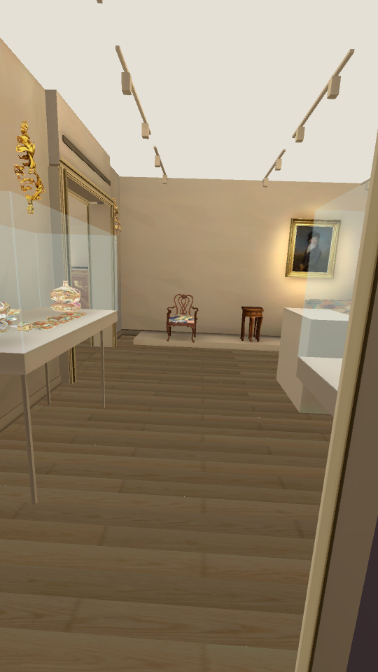
Current model: provisional camera matched to the portrait. Missing wall works and central figures remain visible gaps; this is not full visual acceptance. Independent reverse entry: IMG_6384, 104.25s.
Independent reverse entry: IMG_6384, 104.25s.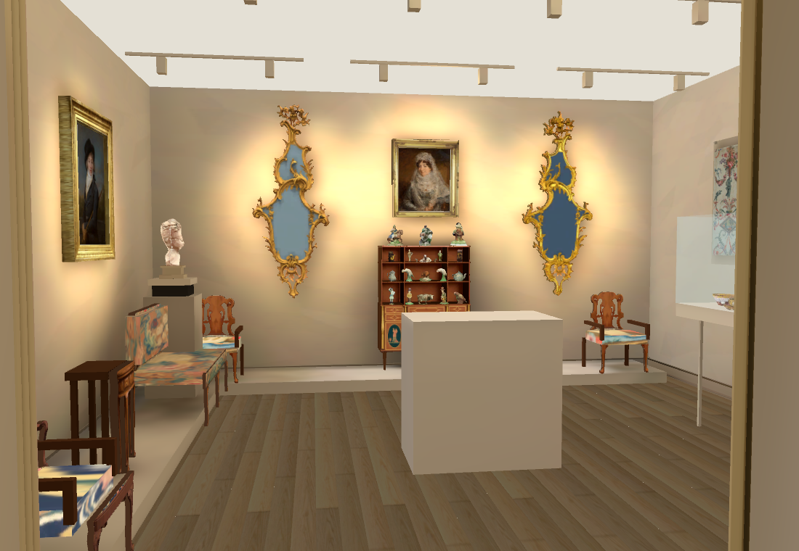
Model from the gallery entrance. Camera is approximate; metric spacing still needs refinement.Newly verified wall work
 Video: IMG_6380, 210.25s, beside the gold service.
Video: IMG_6380, 210.25s, beside the gold service.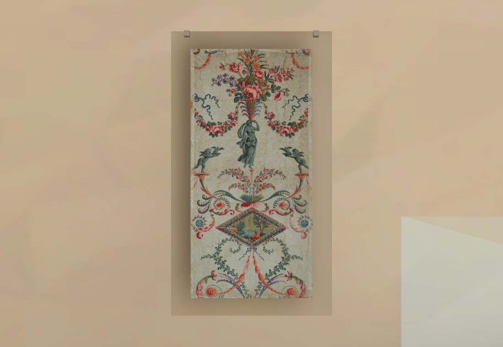
Arabesque Wallpaper · François Louis Prieur · 34.912. Authentic RISD image; catalogue paper dimensions 56 × 114.5 cm. Room placement and white mount dimensions remain provisional.Official RISD catalogue record
Bust front and rear
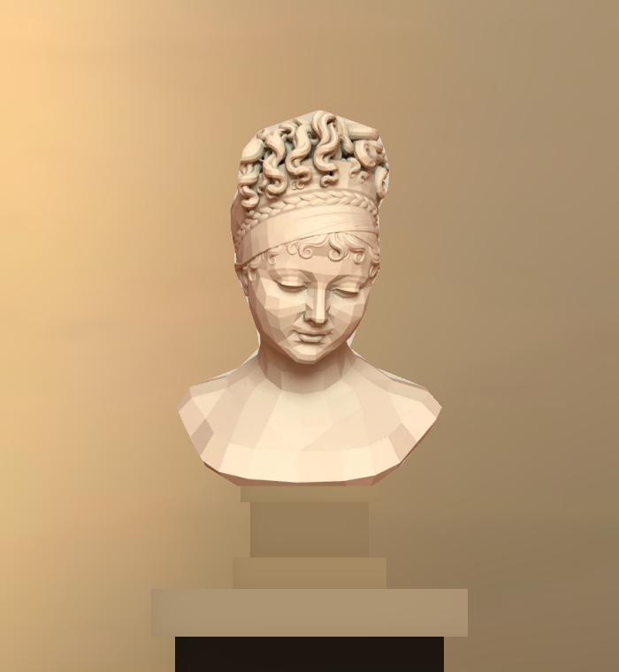
Existing Muse front view, body and marble socle separated.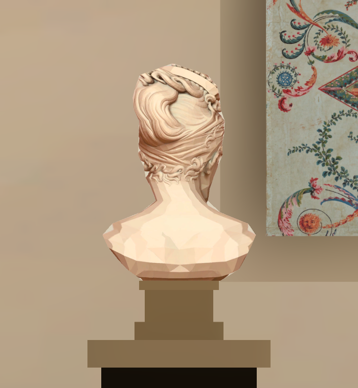
Existing Muse rear view now mapped to the back. Closed volume; side profile and texture seam still provisional.Next gallery asset: Fetti frame
 Filmed frame in IMG_6386, 33.75s.
Filmed frame in IMG_6386, 33.75s. One new OpenRouter Muse pass ($0.01) assembled with authentic 36.003 catalogue image. Asset trial only; gallery placement, depth and bake not yet verified.
One new OpenRouter Muse pass ($0.01) assembled with authentic 36.003 catalogue image. Asset trial only; gallery placement, depth and bake not yet verified.Muse architecture assets
 ivory plaster · one OpenRouter Muse pass · $0.01.
ivory plaster · one OpenRouter Muse pass · $0.01. door architrave · one OpenRouter Muse pass · $0.01.
door architrave · one OpenRouter Muse pass · $0.01. baseboard · one OpenRouter Muse pass · $0.01.
baseboard · one OpenRouter Muse pass · $0.01.Generated plaster contrast is restrained for the smooth reference walls. Doorways use shallow stepped profiles and deep reveals; the source video is reference only.
In the demo
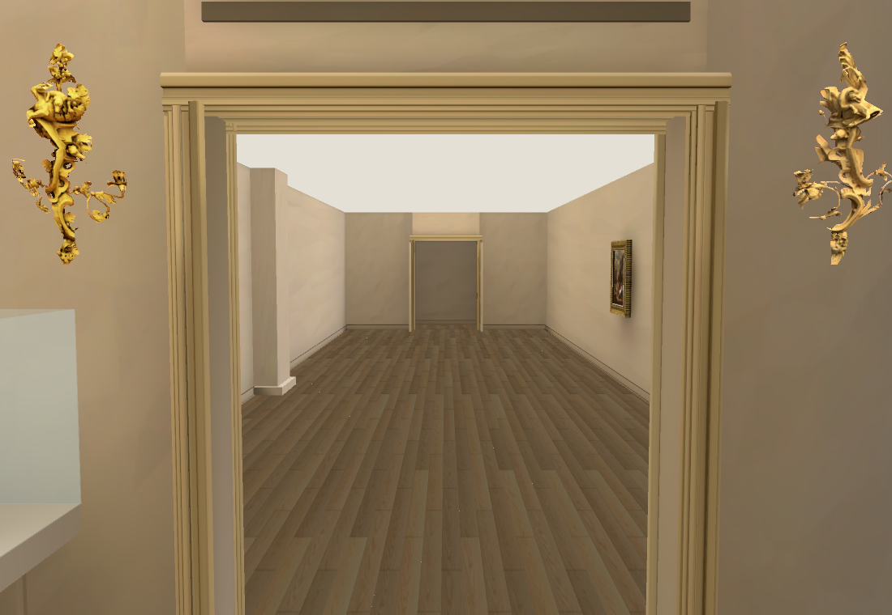
Door surround and continuous gallery floor.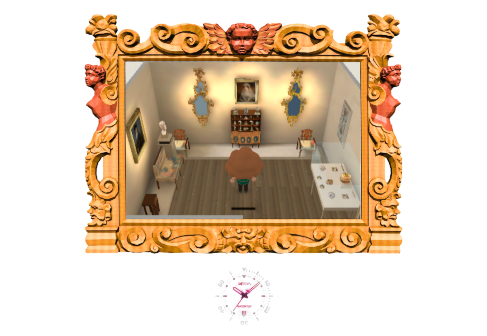
Existing Main Hall lighting, visitor, frames and shaders; ceiling fixtures cut away from the walking camera.44 catalogue object instances plus furniture; 4 authentic catalogue paintings and 1 newly matched wallpaper panel. Objects with a single source view still have provisional hidden geometry. The central Vincennes Muse run remains blocked without a reconciled result and has not been resubmitted.
Native and Chrome154 RTX checks: 22/22 each, including both directions through the far doorway; browser real S/W round trip through the Rockefeller door, no JS/runtime errors. Frame-time p95: 30.95ms; 60fps acceptance is not met. Owning Shell: 46/50, four existing layout/pixel failures. scripts/check.sh and git diff --check pass. Full reconstruction remains active across all ten supplied videos. Current recorded map spend: $0.62; conservative ceiling including unresolved submission: $0.63.